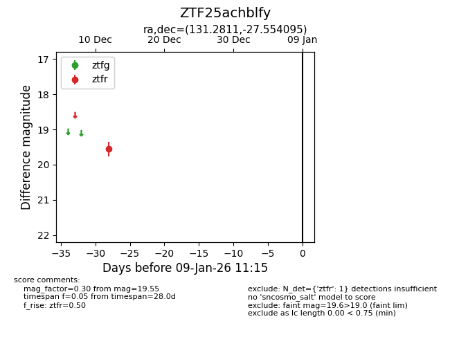
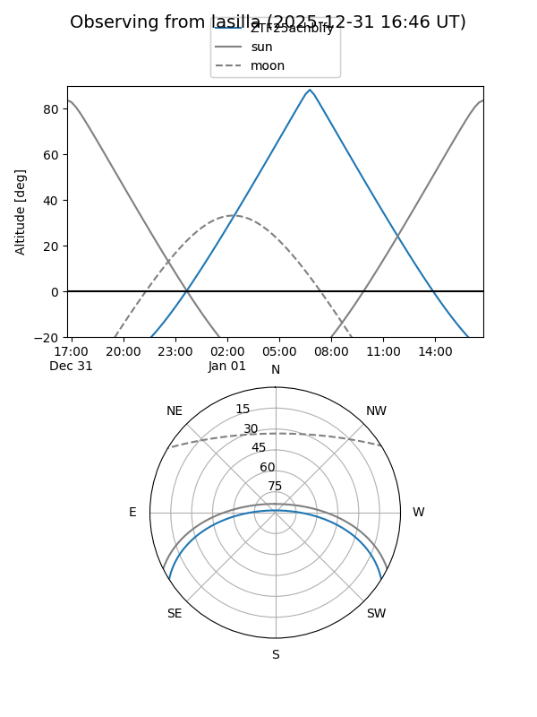
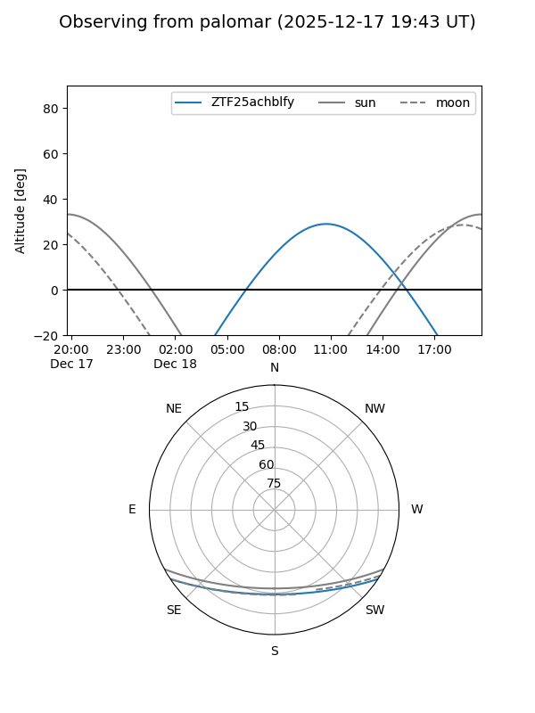

ZTF25achblfy
Target ZTF25achblfy at 2025-12-31 16:59
Aliases and brokers:
FINK:
Lasair:
ALeRCE:
alt names
ZTF25achblfy (ztf,fink_ztf)
Coordinates:
equatorial (ra, dec) = 131.2811,-27.55409
equatorial (HMS+DMS) = 08:45:07.47,-27:33:14.74
galactic (l, b) = (250.6997,+9.47499)
Flags:
Photometry:
last ztfr=19.55
1 ztfr detections
Lightcurve

Visibility


Additional plots